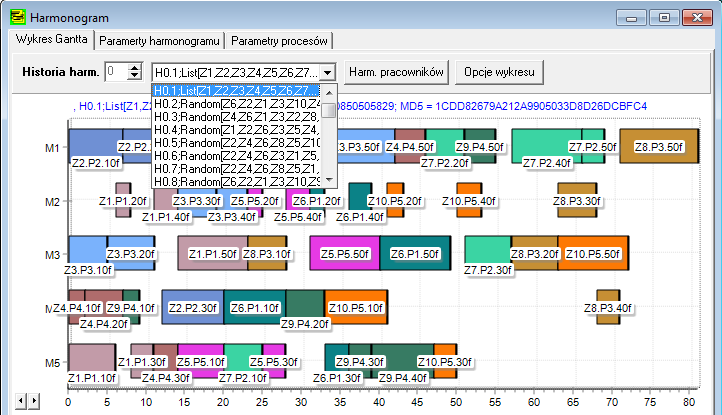
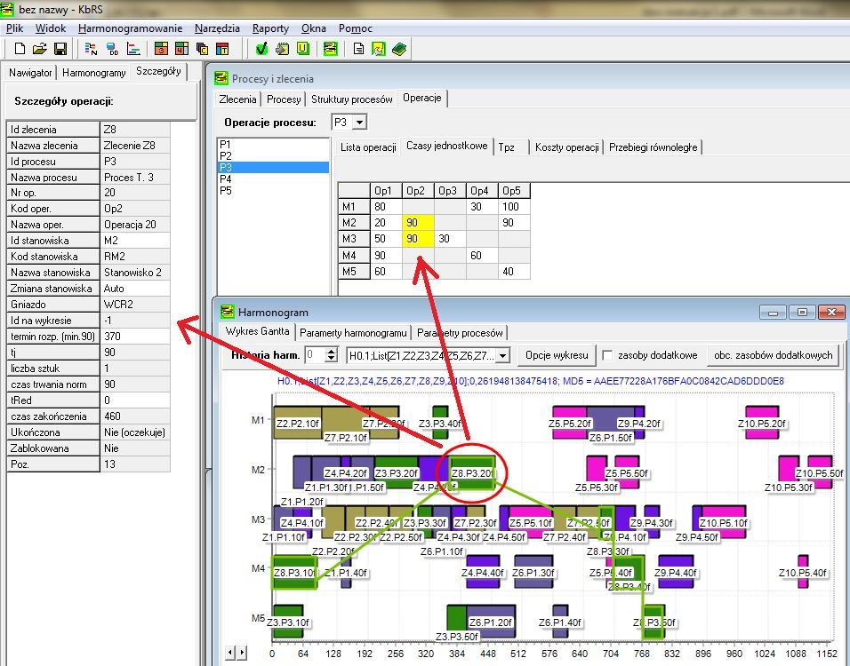
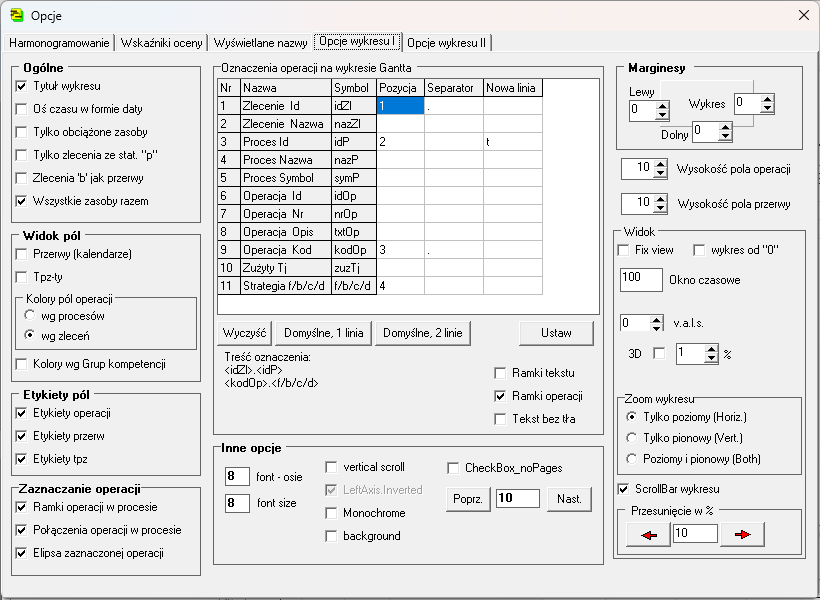
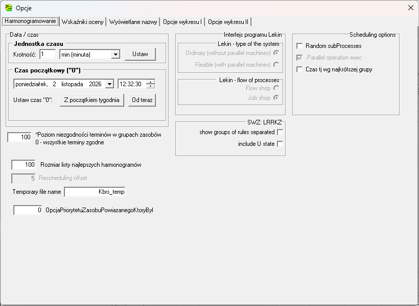
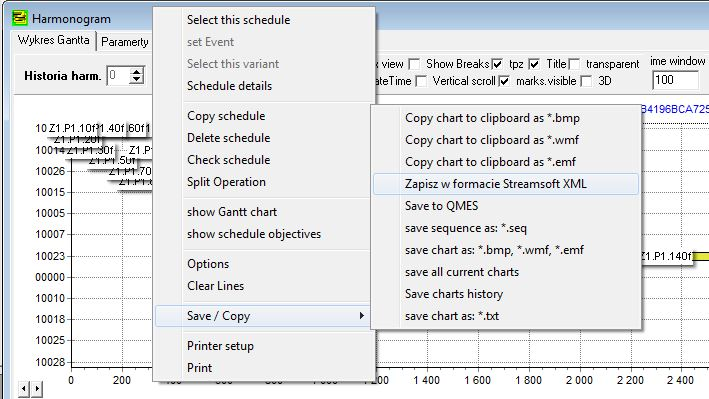
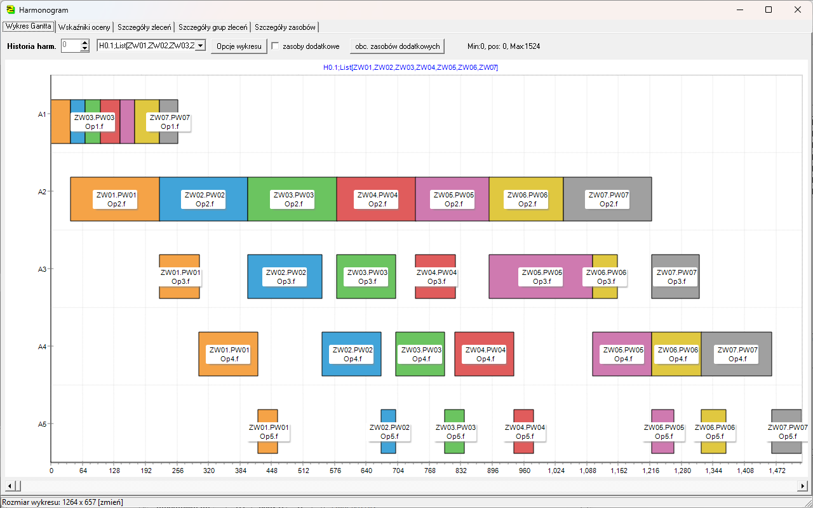
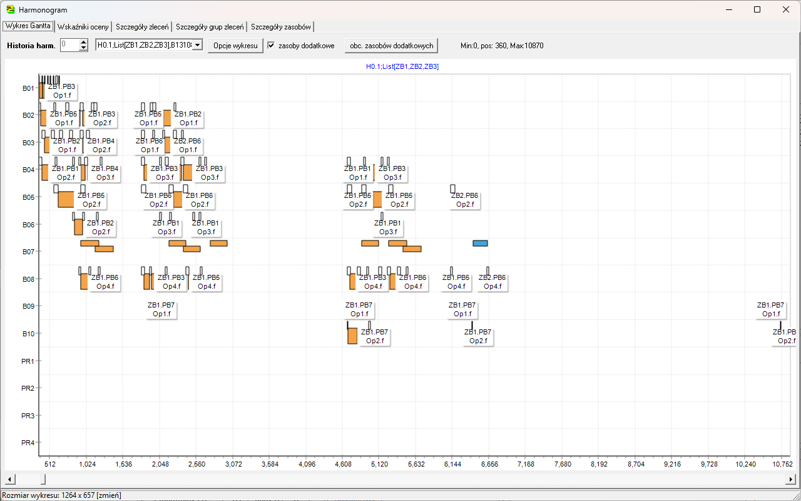
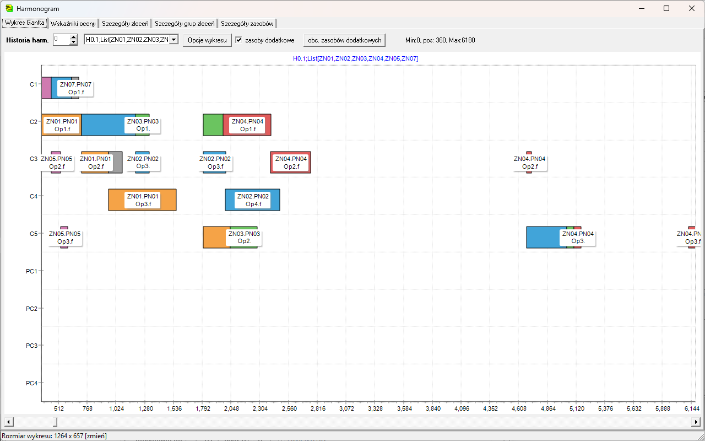

Wykres Gantta¶
Okno Harmonogram → Wykres Gantta pokazuje harmonogram stanowisk i — osobno — zasobów dodatkowych.

Obsługa wykresu¶
| czynność | jak |
|---|---|
| wybór harmonogramu | lista rozwijana nad wykresem |
| ścieżka zlecenia | kliknięcie operacji — wyróżnia całe zlecenie |
| szczegóły operacji | po kliknięciu: w Procesy i zlecenia → Operacje → Czasy jednostkowe czasy wszystkich wariantów operacji są zaznaczone na żółto; nawigator pokazuje szczegóły operacji |
| powiększenie | zaznacz prostokąt od lewej do prawej (lewy przycisk) |
| cały wykres | zaznacz prostokąt od prawej do lewej |
| opis osi pionowej | kliknięcie osi pionowej (lewy przycisk) → menu — zob. niżej |
| oś czasu w jednostkach albo w datach | kliknięcie osi poziomej (lewy przycisk) → menu — zob. niżej |
| zapis i kopiowanie | prawy przycisk na wykresie → Zapis/kopiowanie |
Menu osi wykresu¶
Nowość — wersja dla testerów
Kliknięcie lewym przyciskiem osi pionowej otwiera menu opisu wierszy:
- Opis wierszy - stanowiska: Id, Nazwa, Kod albo Gniazdo,
- Opis wierszy - pracownicy (gdy model ma pracowników): Id, Nazwa albo Kod.
Wykres rysuje się od razu z nowymi opisami; wybór jest zapamiętywany tak samo jak w oknie Opcje (zakładka Wyświetlane nazwy).
Kliknięcie lewym przyciskiem osi poziomej otwiera menu Oś czasu: Jednostki czasu albo Daty — to samo co pole Oś czasu w formie daty w oknie Opcje. Wykres w datach zajmuje całą szerokość okna, tak jak w jednostkach czasu.

Stanowiska o pojemności większej niż 1¶
Nowość — wersja dla testerów
Na stanowisku, które może wykonywać kilka operacji naraz, operacje równoczesne są rysowane na osobnych, cieńszych torach w jednym wierszu. Wysokość pasków zależy od skali osi (powiększenie, wydruk); na niskich paskach opisy są ukrywane.

Opcje wykresu¶
Okno Opcje, zakładki Opcje wykresu I i Opcje wykresu II (przycisk Opcje wykresu albo menu Narzędzia → Opcje wykresów). Najczęściej używane:
| opcja | znaczenie |
|---|---|
| Przerwy (kalendarze) | wyświetlanie przerw |
| Oś czasu w formie daty | oś pozioma w datach zamiast jednostek czasu (to samo co menu osi poziomej) |
| Oznaczenia operacji na wykresie Gantta | etykiety operacji według wybranego kodu opisu |

Zakładka Opcje → Harmonogramowanie wiąże początek harmonogramu z datą.

Zapis harmonogramu¶
- Zatrzymaj poszukiwanie rozwiązań.
- W oknie Harmonogram wybierz z listy harmonogram do zapisu.
- Prawy przycisk na wykresie → Zapis/kopiowanie → wybrany format.

Przykłady¶


